Claude + Gemini API · Case Study · OVERVIEW
Pannocchino e Spighetta have a baby
This is the second of two stories about the farm mascots already introduced in the sibling post, Automatic Storyboard: Meet Pannocchino e Spighetta[1] — "Pannocchino and Spighetta", two mascots who live on a farm, surrounded by assorted friendly little animals. The visual narrative here shifts to the following year, when the couple sets to work preparing a new cake — still with the same ingredients, but lighter and more digestible, suited to weaning (whose packaging we see in the final image).
A campaign built on recurring mascots cannot survive on single hero illustrations — redrawing characters for every scene, channel and occasion is slow and expensive. With that in mind, this post reuses the same locked pair, the same farm, the same nucleus as the sibling post, for a second product. In this case, the couple has settled into family life, with a child, baking cakes for all the characters, all the way to the farm stand selling at zero km. The goal was purely to create a setting in which the engine described in The Engine: generation, control, export and in the underlying technical post (DCO Engine: technical description) could operate.
Prologue — the keyframe
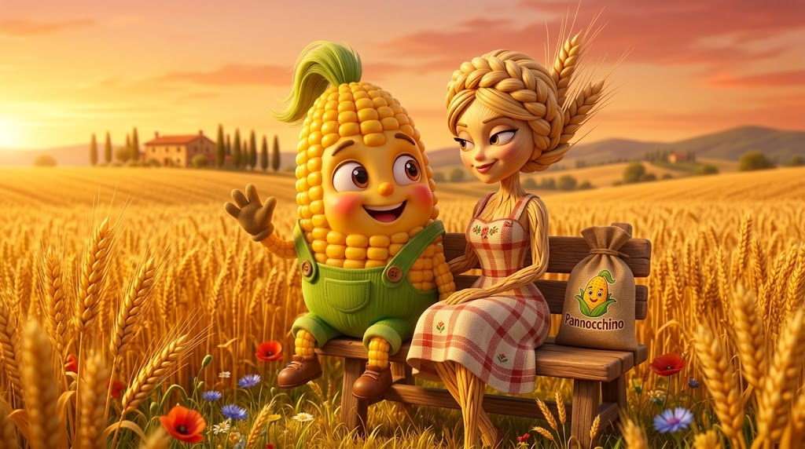
What you'll find here isn't a fixed shot list locked to one idea, but an evolution of the same group of primitives put back on stage: the leads, the wheat field and the farmhouse, the farm animals, the products it's promoting. Compared with the first post, the events change and the staging changes with them — costumes, props, minor characters — while the cast and the setting stay the same. The rigorous version of this mechanism — the structured description file, and the automatic quality-control loop over the results — is covered in a post of its own: The Engine: generation, control, export.
Story — the birth
A third character enters the scene, delighting the couple — the same identity upkeep that holds two faces steady now extends to three, and the newcomer starts to come into play with no reference images of its own to lean on (it exists purely as a product of prompts, models and parameters).
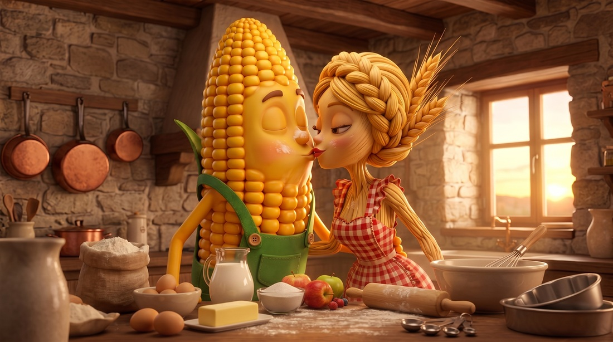
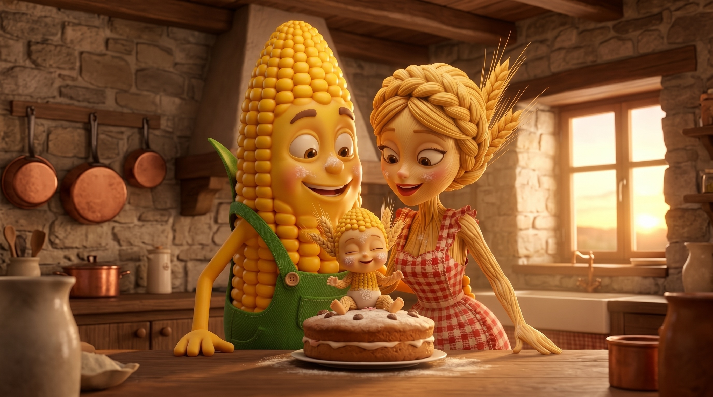
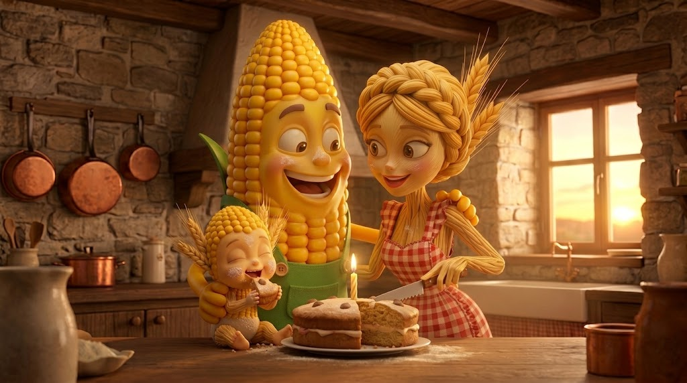
The two shots on either side of this paragraph are the same party caught at two different moments: the quiet cake-cutting indoors, then the same celebration spilling out into the farmyard once the guests — and the animals — show up. Nothing about the setup changes between them: same reference images, same identity lock on Pannocchino and Spighetta. What changes is simply the backdrop and who else is in frame, the same way changing rooms for a real party would.
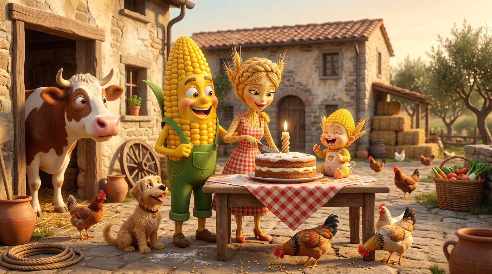
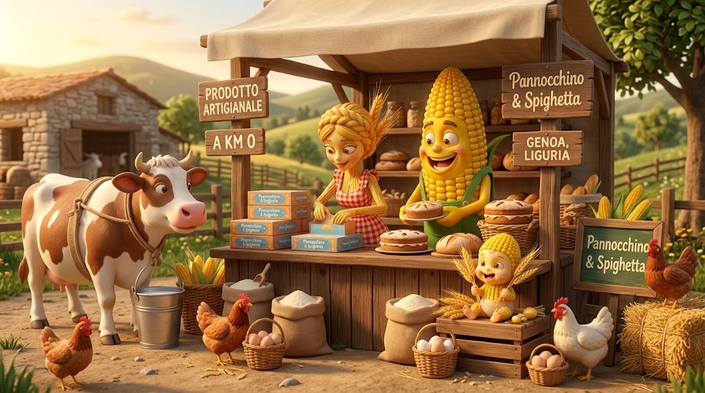
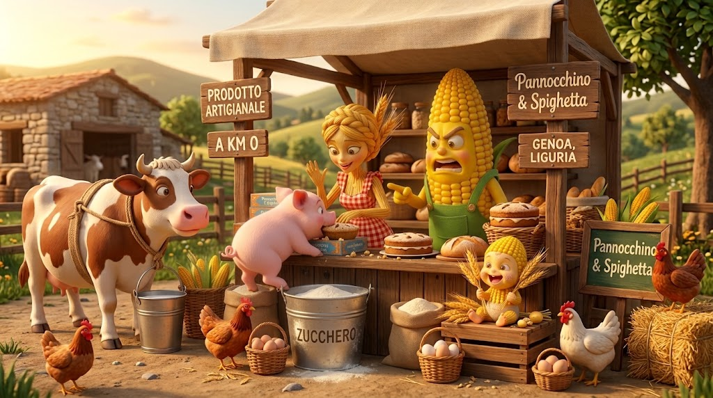
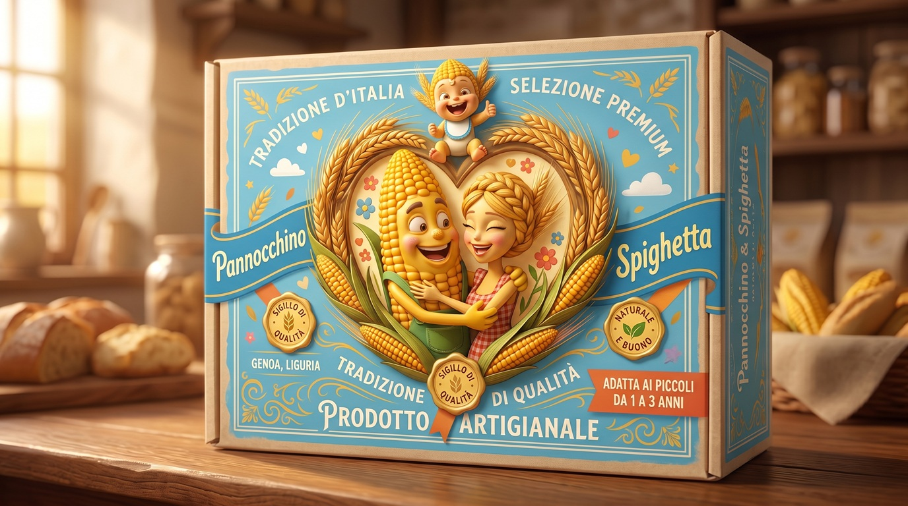
Other scripts the same setup could run
Before the sketches below, a quick recap of the story this run actually told: a new arrival joins the locked pair, a first birthday split between a quiet kitchen moment and a wider farmyard one, a wooden farm stand where the family sells the cake "a km zero," and finally the branded packaging it was building toward all along. Same model as the wedding story: the same three primitives — the locked pair, this field and farmhouse, Torta Spighetta's birth-occasion packaging — were put together by an LLM, which sketched other ways the same occasion could be told. None of these were shot; they're shown here to illustrate what a "variation from the same primitives" actually looks like.
- A storm clips the celebration short — Pannocchino carries the cradle indoors mid-scene, the farmyard animals scattering ahead of the rain, the party finishing by candlelight instead of string lights.
- A multigenerational version: Spighetta's own mother — a second wheat-stalk character, never drawn before — arrives late with a family heirloom wreath, extending the identity-lock problem to a brand-new face mid-story.
- A seasonal swap — the same birthday told in winter, string lights replaced by lanterns in the snow, testing whether the lock on costume and lighting holds as hard as the lock on faces.
- A single-shot version with no party at all: just the three of them on the keyframe bench at dusk, the cake implied rather than shown — the minimum story this same reference pair can still tell.
Simulated engine output — the variant pool
A worked example of what the engine's last two stages — formats (Chapter 07) and export (Chapter 06), see The Engine: generation, control, export — would actually produce from this story, in the same spirit as the cake-brand example in ADV. Starting from four staged stills — the rain closing in on the farmyard, the same rain turned to a sheltering downpour under the oak, the family's stall at the harvest festival, and a rainbow breaking over the whole farm community caught mid-storm — the engine tags each one with its event, weather and slogan, then stages a small pool of labelled variants re-cropped into the aspect ratios a real campaign would need: six labelled variants in all.
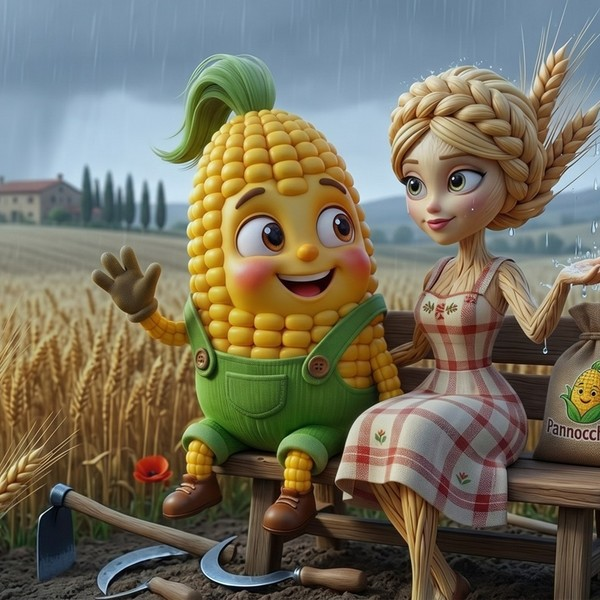
format:1:1 · event:birthday-yard · weather:rain
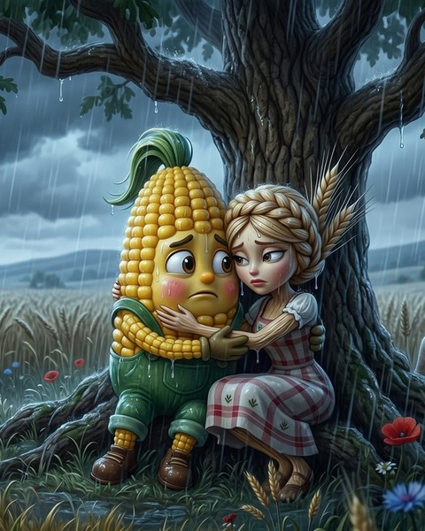
format:4:5 · event:birthday-yard · weather:rain
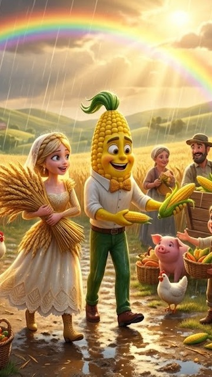
format:9:16 · event:festa-raccolto · weather:rain · slogan:amici-di-campagna “Come wind, come rain, we'll feast on the grain”
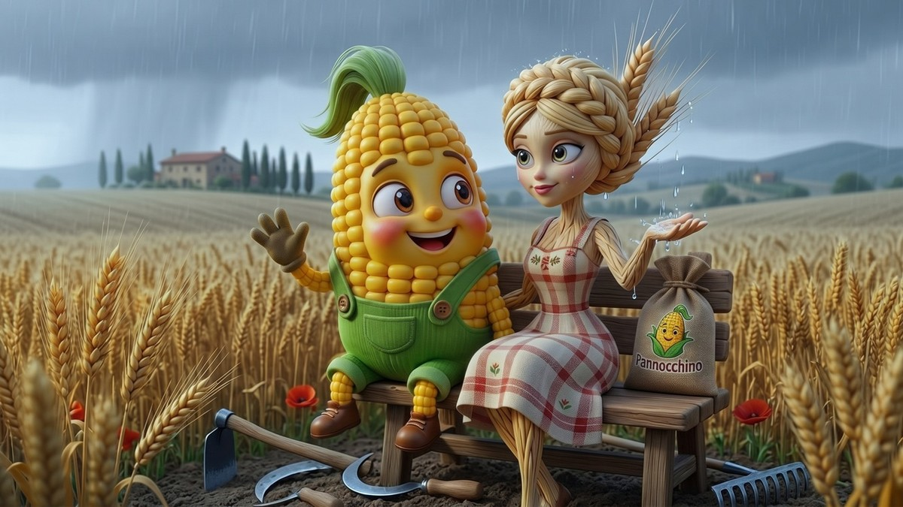
format:16:9 · event:birthday-yard · weather:rain
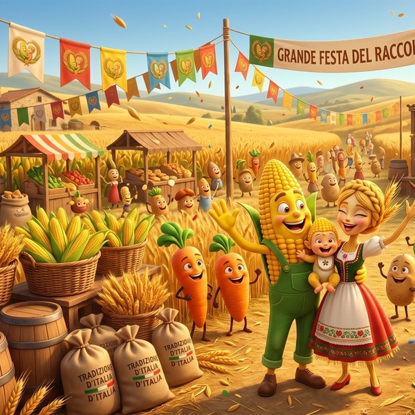
format:1:1 · event:festa-raccolto · slogan:banco-in-festa “Soaked by rain or kissed by sun, a good harvest goes to anyone who wants one”
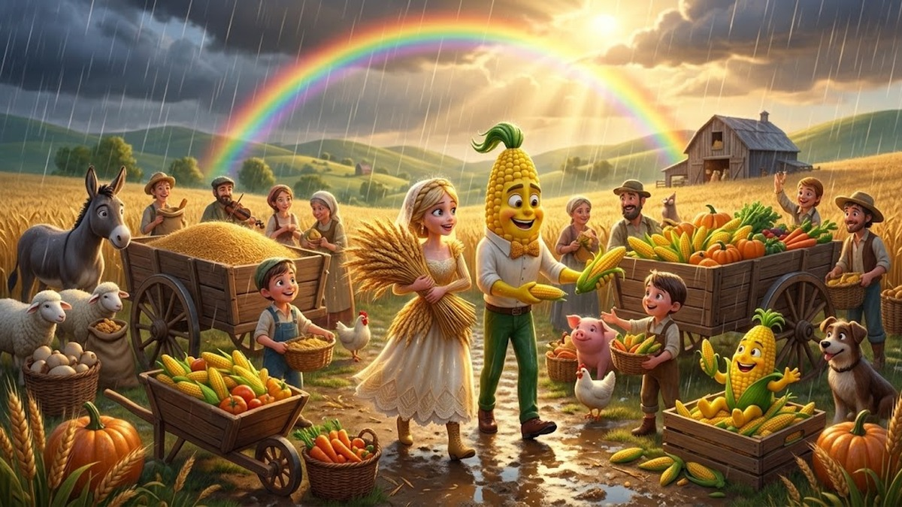
format:16:9 · event:festa-raccolto · weather:rain · slogan:amici-di-campagna “Come wind, come rain, we'll feast on the grain”
Each labelled box above is exactly one row of the manifest described in chapter 06 of The Engine: generation, control, export — here we simulate that formatting/export stage by hand, using four real stills instead of a generated render pool.
The business case
The difference between a one-shot workflow (giving the model exactly one example to follow) and an orchestrated pipeline isn't aesthetic — it's structural, and it shows up directly in the production budget. A one-shot workflow re-pays its full setup cost on every new shot: a new prompt, a new manual check, a new chance for the mascots to drift off-model. An orchestrated pipeline pays that setup cost once, when the reference pair and the identity lock are first built — as they are in the sibling post, Automatic Storyboard: Meet Pannocchino e Spighetta — and amortises it across everything that reuses them afterward: not just more shots of the same story, but this post itself, a second story on the same cast, and, per DCO: One Pipeline, Many Products, a second mascot pair on the same mechanism.
| Metric | Standard "One-Shot" / Manual Prompts | Orchestrated Claude + Gemini Pipeline |
|---|---|---|
| Character Consistency | Low (drifts across frames) | Consistent (reference-conditioned generation + judge loop) |
| Manual Oversight Cost | High (paid per hour, per prompt/edit) | Low (paid once upfront for pipeline setup) |
| Iteration Speed | Slow (manual re-prompting)[3] | Automated (parallel API calls) |
| Scalability across Campaigns | Linear cost increase | Marginal cost per new story |
Put concretely: the same locked pair that produced the wedding story next door also produced this farm story at near-zero extra setup cost, and a second mascot pair in a different vertical at the cost of a new reference shoot — not a new pipeline build. The gap in the table widens, not narrows, the more stories and products run through the same locked pair.
The same holds downstream: the shots of both stories leave as rows of one manifest, labelled by beat, slogan and format, ready for the feed of the dynamic-creative tool already in use — see chapter 06 of The Engine: generation, control, export.
Export: Manifest rows
The 11 fields every row carries (see chapter 06 of The Engine: generation, control, export for what each one is for), filled in for the indoor-birthday 1:1 variant above (adapt the Manifest fields to the new story):
asset_id : torta-spighetta-nascita-slogan01-cucina-1x1
brand : Torta Spighetta
product_line : Birth Edition
story : Pannocchino e Spighetta have a baby
beat : birthday-indoor
narrative_role : development
cast : Pannocchino, Spighetta, baby
format : 1:1
reserved_zone : bottom 18% strip (y: 0.82–1.00), clear of all three faces
variant_labels : [event:birthday-indoor, time:day, slogan:01]
qa_status : passed first try
review_status : approved
This Manifest is consumed by an ad-serving/DCO platform — the trafficking layer (Meta, Google/DV360, or an agency's own DSP) that actually publishes ads and swaps creative in real time. It reads variant_labels and format to pick the right row for each delivery slot and targeting rule; the engine itself never talks to the ad platform directly, only through this Manifest.
- Pannocchino and Spighetta are a fictional example used to illustrate the mechanism; the images on this page are concept illustrations created to visualize the idea, not screenshots of a finished, running pipeline. ↩
- The long caption under this image, like others before it, might look like the image's prompt — it isn't: it's a semantic caption of the same image. Generating a complex image, with several characters that must preserve their identity across a storyboard, is a harder problem than plain prompt design. The prompt is produced by an LLM-RAG that describes the scene by drawing on similar stories (typical of "happy farm" mascots), where every character already has a history somewhere in the vast expanse of the web — though obviously in other settings and other compositions. Composing the new scene then draws on local-attention models and a re-rendering of the characters from drafts where depth/canny functions build the volumes, outlines, lighting and so on (since the composition has to stay coherent with the surrounding space and the other elements), plus other networks such as IP-Adapter, to hold identity steady against earlier frames (the cow, the piglet and so on are always the same individuals even when they're doing something else). A VLM then checks that the scene matches the specification the LLM generated automatically from all the scene's information. A loop-checking pass runs an internal check that the composition is harmonious and believable. All of this has a real bearing on the comparison between open-source and closed commercial models, such as Google's, OpenAI's and so on. ↩
- So the claim isn't that the AI model itself is slower — it's that manual re-prompting adds a human-speed bottleneck (minutes to hours of attention per fix) on top of generation time, while the pipeline's automated loop and parallelism remove that bottleneck: human-in-the-loop correction, one shot at a time, instead of an automated check running across many shots at once. The next release aims to push further on output quality, not just on speed. ↩